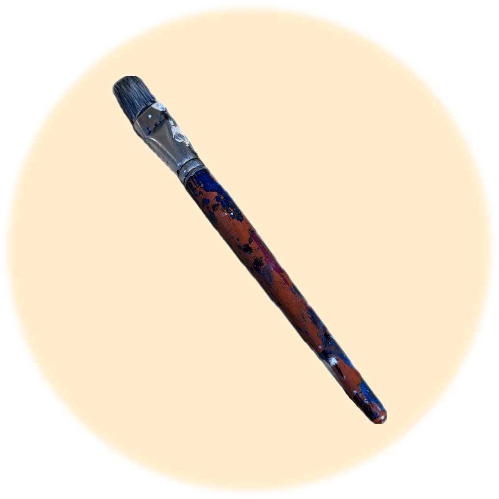

Objet débloqué !
Le pinceau est utilisé pour appliquer avec précision des matériaux de restauration tels que la peinture,
les vernis et les consolidants, permettant ainsi de préserver et de réparer les œuvres d'art.

Bravo tu as débloqué tout les outils pour restaurer une œuvre.
Clique sur continuer, une surprise t'attend !
CONTINUER